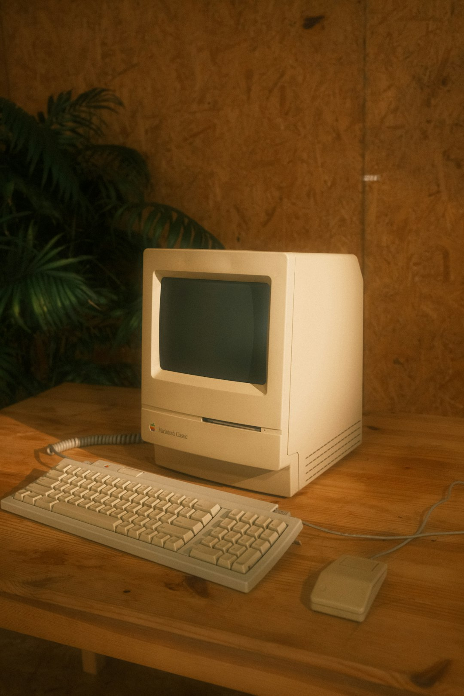

NAS & RAID
Eigenbau, Gehäuseumbau, Festplattenplanung und RAID-Aufbau: von der ersten Idee bis zum laufenden Storage-System.
Homelab. Linux. Hardware-DIY.
Tiefgreifende IT-Themen, verständlich erklärt: NAS-Eigenbau, Linux-Server, RAID, Docker und die kleinen wie großen Herausforderungen einer individuellen Infrastruktur.
Was dich erwartet
ComputerRalle verbindet handwerkliche Arbeit mit fortgeschrittener Softwarekonfiguration. Du bekommst keine Theorie aus dem Lehrbuch, sondern echte Projekte, nachvollziehbare Entscheidungen und Lösungen, die im Homelab bestehen müssen.
Eigenbau, Gehäuseumbau, Festplattenplanung und RAID-Aufbau: von der ersten Idee bis zum laufenden Storage-System.
Server einrichten, mit Cockpit verwalten und Dienste im eigenen Netzwerk zuverlässig betreiben.
Netzteile umbauen, Gehäuse anpassen und aus vorhandener Hardware eine individuelle Lösung entwickeln.
Docker-Upgrades, Thunderbird, Paperless-ngx und die Werkzeuge, die ein Homelab im Alltag besser machen.
Aus dem Homelab
Metallarbeiten am Gehäuse, Laufwerkslayout und RAID-Konzept: ein Storage-Projekt, bei dem Hardware und Planung zusammengehören.
Serverdienste, Updates und Container so aufsetzen, dass sie nicht nur im Test, sondern auch zuhause zuverlässig laufen.
Fortschritte, Rückschläge und die nächste Ausbaustufe: regelmäßige Updates zeigen, wie aus Ideen funktionierende Systeme werden.

So entstehen die Videos
Eine Idee wird zum konkreten Aufbau: mit Material, Werkzeug und einem Plan für das Ergebnis.
Hardware, Konfiguration und Stolpersteine werden so gezeigt, dass du die Entscheidungen nachvollziehen kannst.
Am Ende zählt der Alltag: läuft der Dienst, ist das System wartbar und was kommt als Nächstes?
Über ComputerRalle
Technik begleitet mich seit meiner Kindheit. Heute verbinde ich Erfahrung, Neugier und echtes Handwerk.
Ich bin Ralf-Peter Kleinert, geboren 1981 in Hennigsdorf bei Berlin. Als echter DDR-Bürger bin ich mit dem Commodore C64 aufgewachsen und habe seitdem die gesamte Entwicklung miterlebt: von den ersten klapprigen Rechnern bis zur heutigen High-End-Maschine.
Mein Drang zu lernen hat mich tief in die Welt der Computer geführt. Seit Windows 95 kenne ich die typischen „Computerprobleme“ aus erster Hand. Ich bin überzeugt: Gerade diese Schwierigkeiten bringen die besten Experten hervor.
Mit dem Web 2.0 bekam Lernen für mich eine neue Dimension. Computer wurden vernetzt, Kommunikation wurde unmittelbarer und aus einsamen Nerd-Runden entstand weltweites Networking.
Von 2010 bis 2012 absolvierte ich meine Ausbildung zum Mediengestalter beim Silicon Studio Berlin. Ergänzt wurde sie durch ein Fotografie-Praktikum bei One I A Fotostudio – wichtiges Handwerkszeug für mein heutiges Social Media Management.
Heute blogge ich über IT, schreibe Bücher und arbeite selbstständig als System- und Server-Administrator. Ich beherrsche alle Windows-Systeme und beschäftige mich intensiv mit Linux- und Windows-Servern. Meine Kundinnen und Kunden unterstütze ich dabei, Systeme aufzubauen, zu pflegen und dauerhaft zu warten – bevorzugt mit Proxmox VE als Plattform.
Auf YouTube und im Internet findest du mich unter meinem Namen:
#ComputerRalleDer YT-Kanal
Hallo liebe Leute! Hier auf meiner Seite bekommst du Einblicke in meine Projekte, meine Erfahrungen und in die Technik, die mich begeistert. Auf YouTube stelle ich viele Anleitungen und Tutorials bereit: verständlich erklärt, direkt aus dem Homelab und mit allen wichtigen Schritten zum Nachmachen.
Ob NAS-Eigenbau, Linux-Server, Docker oder Hardware-DIY: Ich nehme dich mit an die Werkbank und zeige nicht nur das fertige Ergebnis, sondern auch den Weg dorthin. So entstehen Lösungen, die du verstehen, nachbauen und im eigenen Zuhause weiterentwickeln kannst.
Wenn du noch tiefer einsteigen möchtest, findest du auf meinem Fachblog und auf ralf-peter-kleinert.de ausführliche Anleitungen zu Linux, Windows, Proxmox, Firewalls und weiteren IT-Themen.
Ausführliche Anleitungen für Linux, Server, Docker, Thunderbird und Paperless-ngx.
Langzeitprojekte bleiben transparent: Was funktioniert, was musste geändert werden?
Kurze Einblicke aus dem Arbeitsalltag und fertige Ergebnisse in kompakter Form.
Kanal-Performance
Starkes Wachstum: Die Aufrufe, Wiedergabezeit und Kommentare zeigen, dass die detaillierten Tutorials und DIY-Projekte eine wachsende und aktive Community erreichen. Über drei Millionen Impressionen und die verbesserte Klickrate machen sichtbar, wie gut Themen und Präsentation bei den Zuschauern ankommen.
Proxmox
Ich arbeite seit Jahren intensiv mit Proxmox VE und begleite Kundenumgebungen von der ersten Planung über die Installation bis zum laufenden Betrieb. Dabei geht es mir nicht um Showeffekte, sondern um stabile Systeme, nachvollziehbare Entscheidungen und Hilfe, die im Alltag wirklich trägt.
Auf YouTube habe ich zwei umfangreiche Proxmox-Lehrgänge mit über 25 Videos veröffentlicht. Die Tutorials finden starken Anklang, weil sie nicht nur Funktionen zeigen, sondern echte Zusammenhänge erklären: Storage, Netzwerke, Backups, Cluster, Hardware-Fragen und typische Stolperstellen aus der Praxis.
Zwei Proxmox-Playlists führen Schritt für Schritt durch die wichtigen Grundlagen und Praxisthemen. Verständlich erklärt, mit echtem Homelab-Bezug und so aufgebaut, dass man die Inhalte wirklich nacharbeiten kann.
Neben den Videos schreibe und verkaufe ich seit Jahren Proxmox-Fachbücher auf Amazon. Die Bücher greifen die Fragen auf, die in echten Projekten immer wieder auftauchen.
Ich installiere, betreue und pflege Proxmox-Systeme für Kundinnen und Kunden. Wichtig ist mir dabei ein ruhiger, verlässlicher Umgang: sauber dokumentiert, verständlich erklärt und mit Blick auf langfristige Stabilität.
Wenn du Proxmox einsetzen, verstehen oder eine bestehende Umgebung sauber weiterentwickeln möchtest, helfe ich gern mit Erfahrung aus Videos, Büchern und echter Kundenpraxis. Für sehr tiefgehende Anleitungen zu Linux, Windows, Proxmox, Firewalls und verwandten Themen findest du weitere Inhalte auf ralf-peter-kleinert.de und im Fachblog.
Zum Nachlesen und Nachmachen
Vom ersten Server bis zum abgesicherten Betrieb: Hier findest du ausgewählte Anleitungen von meiner Fachseite.
Der erste Teil des Videolehrgangs zeigt die Installation von Proxmox VE 8.3.0.
Anleitung ansehenDen eigenen Proxmox-Server schützen und die Sicherheit der Umgebung verbessern.
Anleitung lesenSchlüssel erstellen und auf dem Proxmox-Server installieren – im vierten Teil des Videolehrgangs.
Anleitung ansehenProxmox-Backups verschlüsseln, ohne einen Proxmox Backup Server einzusetzen.
Anleitung lesenEinen 1blu Storage-Server als Grundlage für einen eigenen Proxmox Backup Server nutzen.
Anleitung lesenDie Anleitung zum Versionswechsel von PVE 8 auf PVE 9 mit Debian Trixie.
Anleitung lesenEinen Proxmox-Cluster aufbauen und virtuelle Maschinen für Hochverfügbarkeit einrichten.
Anleitung lesenNetzwerksicherheit mit pfSense auf einem Hetzner-Server mit nur einer öffentlichen IP-Adresse.
Anleitung lesenKontakt
Schreib mir kurz, worum es geht. Ich melde mich mit einer klaren Einschätzung, was sinnvoll ist und wie wir starten können.
Sie möchten Ihr Unternehmen, ein Produkt oder eine Dienstleistung einer technikaffinen Zielgruppe vorstellen?
Ich bin offen für passende Kooperationen mit Unternehmen, Herstellern und Agenturen rund um meinen YouTube-Kanal ComputerRalle.
Ob Sponsoring, Produktvorstellung, Integration in ein bestehendes Video oder eine längerfristige Partnerschaft – wenn Ihr Angebot zu meinen Themen und meiner Community passt, freue ich mich über Ihre Anfrage.
Im Mittelpunkt stehen bei mir IT, Homelab, Linux, Server, Proxmox, Storage, Hardware und praktische Technikprojekte. Wichtig ist mir dabei, dass Kooperationen thematisch zu meinem Kanal passen und gegenüber meinen Zuschauerinnen und Zuschauern transparent bleiben.
Schreiben Sie mir gerne mit einer kurzen Vorstellung Ihres Unternehmens, des Produkts und Ihrer Idee für eine mögliche Kooperation.